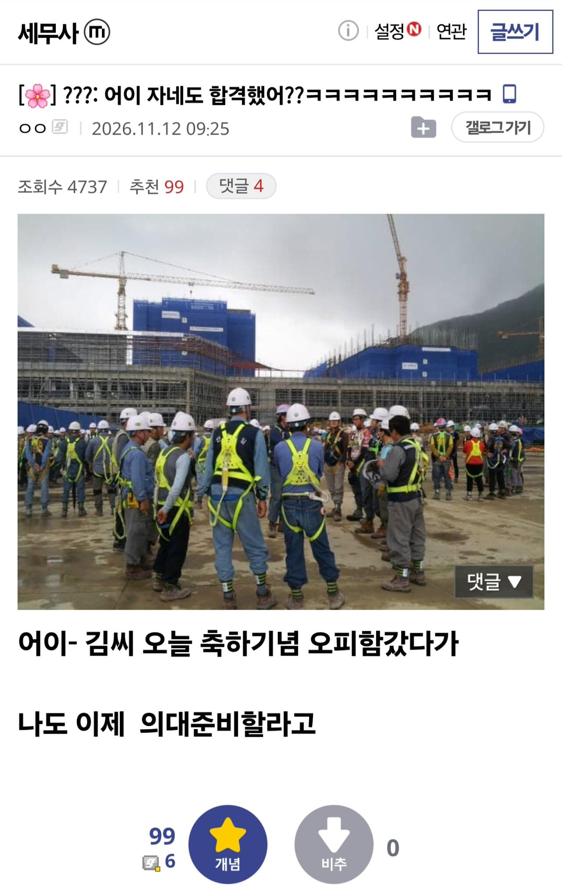

실성한 세무사갤
댓글
문제 궁금하다 얼마나 처어렵길래
걍 틀리라고 배운것 같이 보이는 안배운것들을 냄
국사시험 보는데 조선왕조실록에서 왕이 한 행동 한소절 원문 그대로 적어놓고 이 시절 명나라와 맺었던 경제적 조약을 중 틀린것을 고르시오 수준의 문제만 즐비한 수준이라고 해야하나..
너 전공이 뭐냐
문제 몇개는 아예 풀지 말라는 수준이라 1타 강사도 법전보고 풀어야 한다고 말하던데
근데 윤리적인 부분 빼고, 이제 AI 보조 도구를 '누구나' 사용 가능하다면
내용을 단순히 암기하는 시험은 의미가 더 없지 않나?? 시대가 점차 변하고 있는데
기존에도 내용 암기 확인하는 건 아니었음
그보다는 암기한 내용 중에서 여기에다가 어떤 내용을 어떻게 적용해서 어떻게 해석할 것인가? 이런 거지
암기 뿐만 아니라 응용력도 시험하는 건데, 그걸 전부 AI한테 맡겨버리면
나중에 AI찐빠로 문제 터져도 이게 어디서, 왜, 어떻게 터졌는지는 물론이고 아예 터졌다는 인식조차 못하는 새끼들이 튀어나올 테니 아직은 멀었음
뇌에 보조칩 심으면 이제 끝이지 뭐
기술지식은 곧 의미없어짐
그거 되면 우리 죽을때임 ㅋㅋㅋㅋ
그거 10년도 안남음
상용3년 보급5년 기초적인 임플란트화 보수적으로 7~10년본다
근거는?
너 10년전에 지금기술 수준 말했으면 죽기전을 넘어 100년뒤에나 될법하다 했을걸?
20년전에 좆만한 폰으로 사진도찍고 고사양게임도하고 업무도하고 실시간 번역에 티비도 보고 다 할거라는 글에 써진 댓글이 작성자 병신취급하는 조리돌림이였음 ㅋㅋ
심지어 기술발전 그래프는 1차함수가 아니고 지수함수임
ㄴㄴ 바이오 기술은 생각보다 가시적으로 진보함
이쪽은 잘 모른다만 제약쪽 있어봤던 경험으로는 신기술은 ai 발전으로 엄청쏟아지는데 임상등의 등록 절차가 기본으로 년 단위라 느린거아닐까? 곧 봇물터지듯 뻥 터질거같은데
화장품도 신규 제형, 기술 등등 막 쏟아져 나오는데 임상 때문에 좀 늦춰지는 감이 있음 근데 필수니까 뭐...
좋겟다
올해가 막판이엇던거같은데 제일좋은기회 날리네
그냥 협회 등에서 한번 더 시험쳐보게 하면 안됨?
초 천재니까 3개월 공부안해도 점수 나오지 않을까? 별일없이 잘 풀면 뭐… 초천재 세무사 되는거고
안되면… ㅋㅋㅋ
사실 고시제도 및 시험제도의 근간을 흔드는거라서 대충 넘어가지말고 제대로 확인하고 대안 대책 찾아갔으면 좋겠음
2차에서 면접으로 시험문제 토킹해보면 바로 탄로나는거 아니냐?
이제 시험의 제도가 기술사같이 논문형+면접형 형태로 되는거아니냐 ㅋㅋㅋㅋㅋㅋㅋㅋㅋ
걍 면접관 몆명이서 계속 집요하게 물고늘어지면 답나오는데
도선사시험도 그렇거든
1차 시험은 그렇다 쳐도 2차시험이 구술시험으로 되면 그냥 끝나지

님도 빨리 치셈 자격증나옴